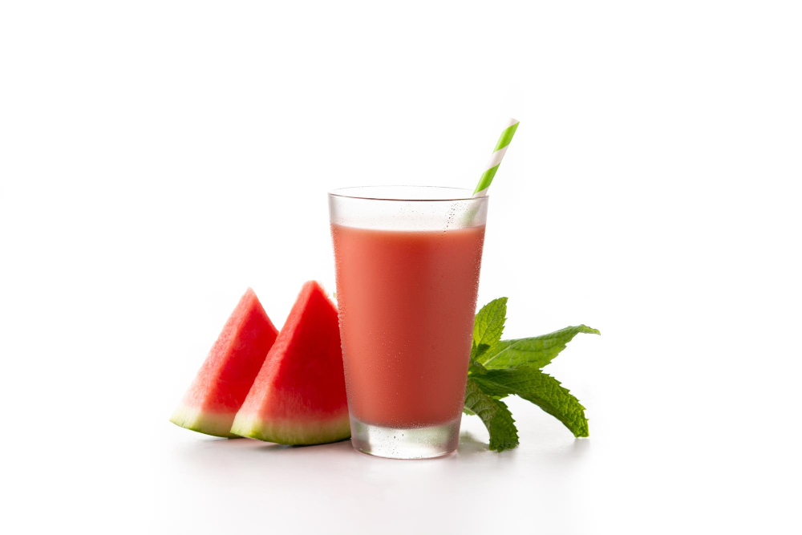

Watermelon Lemonade Recipe
Home

Description
This watermelon lemonade is a light and refreshing summer drink that's easy to make with pureed watermelon and homemade lemonade.
Garnish each glass with a slice of watermelon if you like.
Ingredients
- 4 cups seedless watermelon, cubed
- ½ cup white sugar
- ½ cup water
- 3 cups cold water
- ½ cup fresh lemon juice
- 6 cups ice cubes
Steps
- Gather all ingredients.
- Place watermelon into a blender; cover and puree until smooth. Strain through a fine mesh sieve.
- Bring sugar and 1/2 cup water to a boil in a saucepan over medium-high heat until sugar dissolves, about 5 minutes.
- Divide ice into 12 glasses; scoop 2 to 3 tablespoons of watermelon puree over ice, then top with lemonade.
- Gently stir before serving.